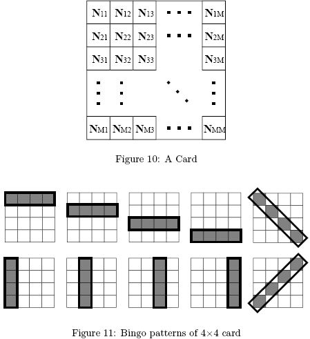
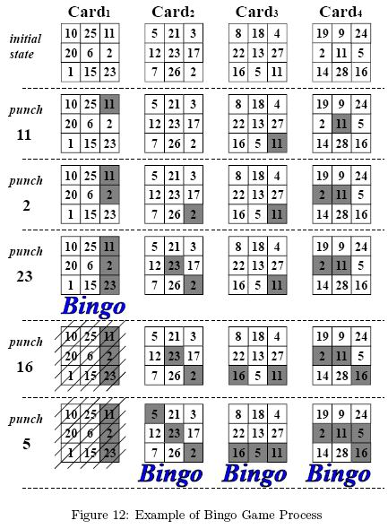
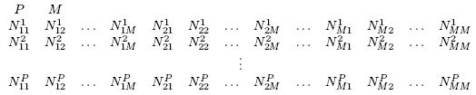

Home Page
F.A.Qs
Statistical Charts
Past Contests
Scheduled Contests
Award Contest
| Online Judge | Problem Set | Authors | Online Contests | User | ||||||
|---|---|---|---|---|---|---|---|---|---|---|
| Web Board Home Page F.A.Qs Statistical Charts | Current Contest Past Contests Scheduled Contests Award Contest | |||||||||
|
Language: Bingo
Description A Bingo game is played by one gamemaster and several players. At the beginning of a game, each player is given a card with M *M numbers in a matrix (See Figure 10).
 As the game proceeds, the gamemaster announces a series of numbers one by one. Each player punches a hole in his card on the announced number, if any. When at least one 'Bingo' is made on the card, the player wins and leaves the game. The 'Bingo' means that all the M numbers in a line are punched vertically, horizontally or diagonally (See Figure 11).  The gamemaster continues announcing numbers until all the players make a Bingo. In the ordinary Bingo games, the gamemaster chooses numbers by a random process and has no control on them. But in this problem the gamemaster knows all the cards at the beginning of the game and controls the game by choosing the number sequence to be announced at his will. Specifically, he controls the game to satisfy the following condition.
Figure 12 shows an example of how a game proceeds. The gamemaster cannot announce '5' before '16', because Card4 makes a Bingo before Card2 and Card3, violating the condition (*). Your job is to write a program which finds the minimum length of such sequence of numbers for the given cards. Input The input consists of multiple datasets. The format of each dataset is as follows.
 All data items are integers. P is the number of the cards, namely the number of the players. M is the number of rows and the number of columns of the matrix on each card. Nkij means the number written at the position (i, j) on the k-th card. If (i, j) != (p, q), then Nkij != Nkpq. The parameters P, M, and N satisfy the conditions 2 <= P <= 4, 3 <= M <= 4, and 0 <= Nkij <= 99. The end of the input is indicated by a line containing two zeros separated by a space. It is not a dataset. Output For each dataset, output the minimum length of the sequence of numbers which satisfy the condition (*). Output a zero if there are no such sequences. Output for each dataset must be printed on a separate line. Sample Input 4 3 10 25 11 20 6 2 1 15 23 5 21 3 12 23 17 7 26 2 8 18 4 22 13 27 16 5 11 19 9 24 2 11 5 14 28 16 4 3 12 13 20 24 28 32 15 16 17 12 13 21 25 29 33 16 17 18 12 13 22 26 30 34 17 18 15 12 13 23 27 31 35 18 15 16 4 3 11 12 13 14 15 16 17 18 19 21 22 23 24 25 26 27 28 29 31 32 33 34 35 36 37 38 39 41 42 43 44 45 46 47 48 49 4 4 2 6 9 21 15 23 17 31 33 12 25 4 8 24 13 36 22 18 27 26 35 28 3 7 11 20 38 16 5 32 14 29 26 7 16 29 27 3 38 14 18 28 20 32 22 35 11 5 36 13 24 8 4 25 12 33 31 17 23 15 21 9 6 2 0 0 Sample Output 5 4 12 0 Hint For your convenience, sequences satisfying the condition (*) for the first three datasets are shown below. There may be other sequences of the same length satisfying the condition, but no shorter.
11, 2, 23, 16, 5 15, 16, 17, 18 11, 12, 13, 21, 22, 23, 31, 32, 33, 41, 42, 43 Source |
[Submit] [Go Back] [Status] [Discuss]
All Rights Reserved 2003-2013 Ying Fuchen,Xu Pengcheng,Xie Di
Any problem, Please Contact Administrator